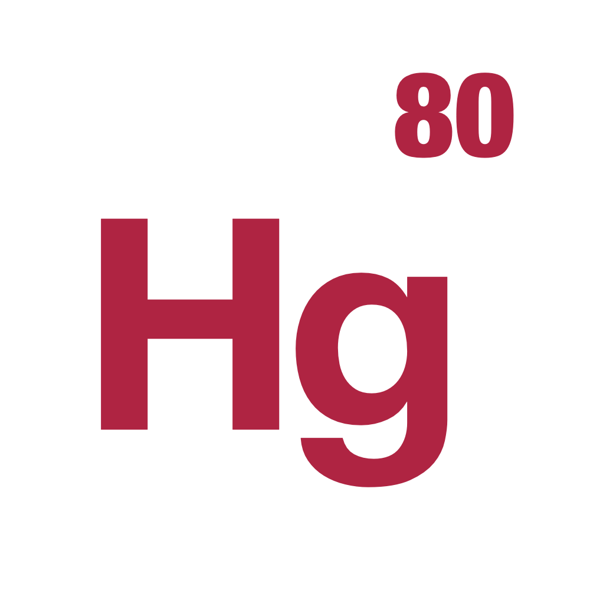

Mercury High-Performance Group
PI: Jiannan Tian, PhD
Mercury High-Performance Group is a research group at Oakland University, led by Jiannan Tian. We work on large-scale data reduction, GPU-accelerated compression, and the cyberinfrastructure that carries scientific data between HPC, cloud, and edge.
Our software is open source. We also host workshops that bring this community together: see Events.
Joining We are recruiting Ph.D. students. Reach out to jtian+phdstudy'at'oakland.edu with a brief introduction, CV, and academic transcripts.
Latest news
- Upcoming
We are hosting IWBDR-6: The 6th International Workshop on Big Data Reduction, with BigData '26.
- Upcoming
We are hosting the ECHO Workshop: The 1st International Workshop on Edge-Cloud-HPC Operational Continuum, in conjunction with SC '26.
One paper accepted at ICS '26 (1st cycle).
Two papers accepted at IPDPS '26.
Three papers accepted at SC '25 (acc. rate: 21.2%).
Our NSF CSSI project SGCC was awarded. Many thanks to NSF!